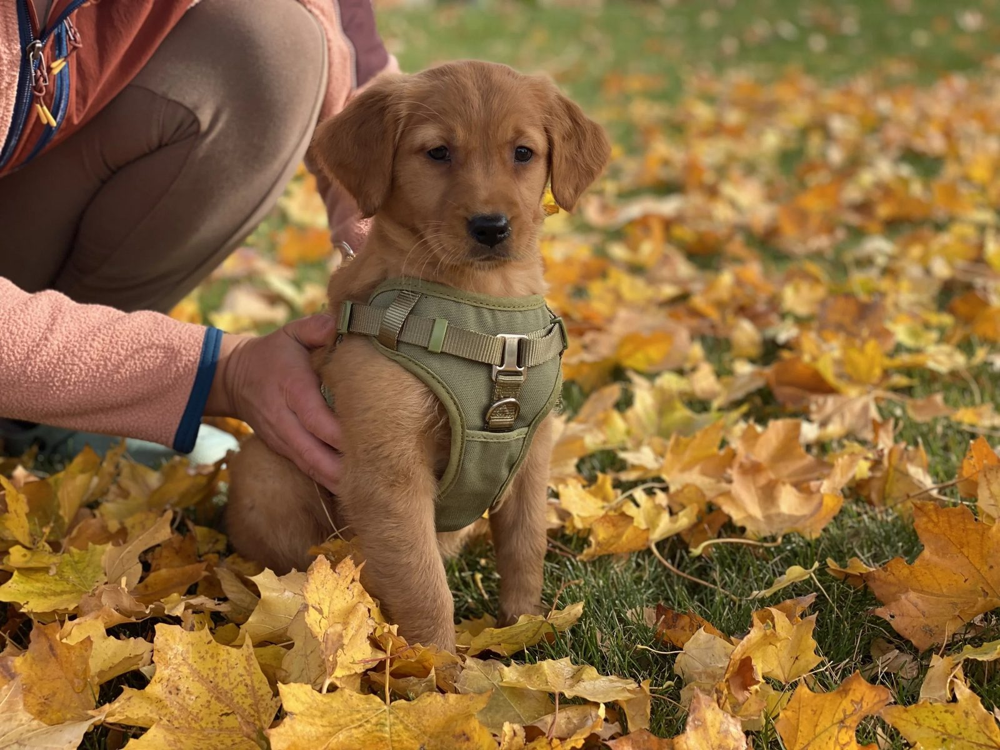
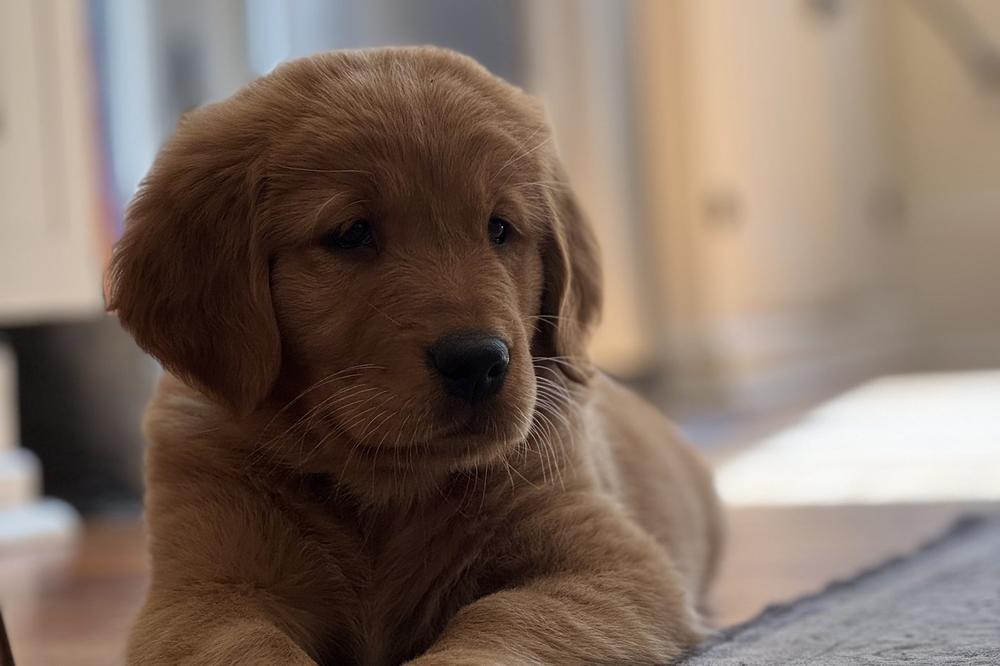
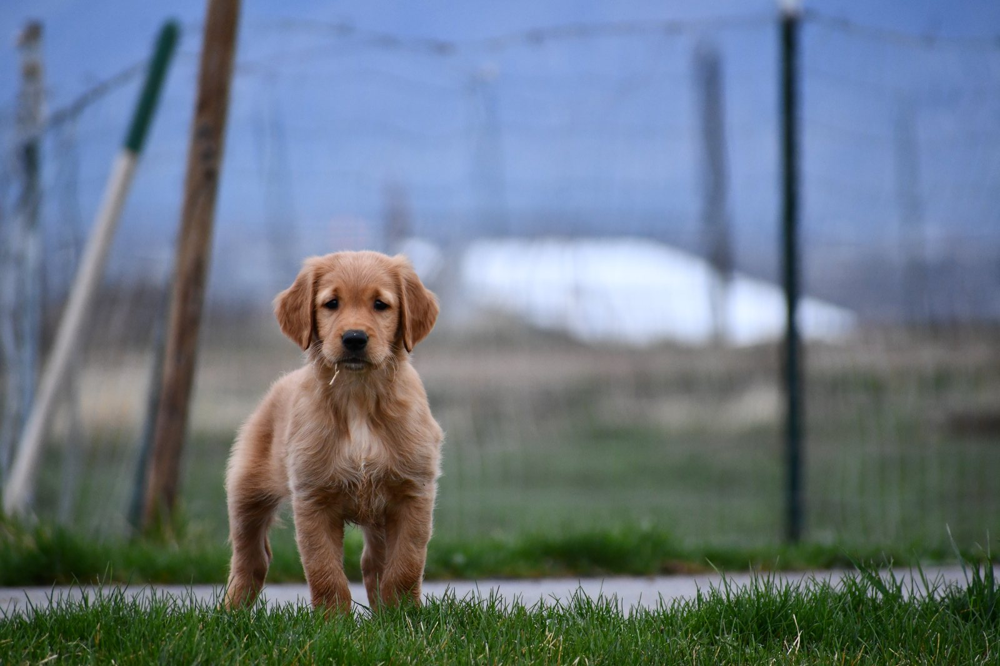
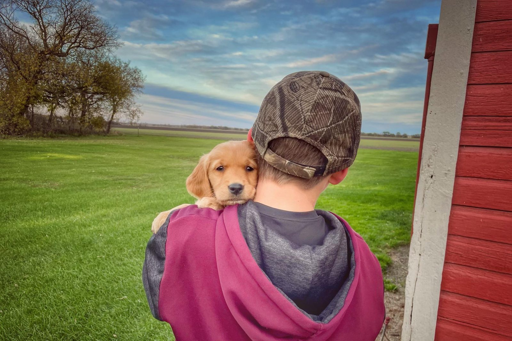

The biggest mistake people make with a puppy is trying to test whether the dog is gun shy.
They take the puppy outside, fire a gun, and watch to see what happens.
Sometimes the puppy handles it.
Sometimes that first bad experience creates a problem that takes months to repair.
I would rather build a positive relationship with gunfire gradually than find out the hard way that we moved too fast.
The goal is not to see whether the puppy can tolerate a gunshot.
The goal is to teach the puppy that gunfire is simply part of something positive.
Do not start by shooting over the puppy
A young dog does not need to hear a close shotgun blast to become a hunting dog.
There is no benefit to rushing that step.
I see people get excited because they have a new puppy and want it to become a hunting dog right away.
They may:
- Throw a bumper and fire a shot nearby.
- Take the puppy hunting before it is ready.
- Shoot directly over the dog.
- Clap or bang something loudly near the puppy.
- Take the puppy around other people shooting.
- Fire a gun just to see how the puppy reacts.
That is not how I like to introduce gunfire.
A sudden noise that startles the puppy can create the exact association we are trying to avoid.
Start with something the puppy already loves
Before introducing gunfire, I want the puppy doing something positive.
That might be:
- Eating.
- Retrieving a ball or bumper.
- Playing.
- Chasing.
- Working around birds.
- Spending time in an environment where the puppy is happy and confident.
For hunting breeds, birds can be especially useful because prey drive can become a very strong positive experience.
If the puppy is excited about the bird, the bird should be much more important than the sound we eventually introduce.
That gives us something positive to build around.
Bird drive can be a great foundation
When we introduce a young hunting dog to gunfire in the field, we often start with birds first.
There may be no gun involved at all at the beginning.
We want the puppy to become excited about the bird.
The dog may chase it, retrieve it, mouth it, or show strong prey interest.
Once the puppy is very birdy and is working with a happy attitude, then we can begin introducing sound at a distance.
The positive activity comes first.
Gunfire comes later.

Start the sound far away
When we begin adding gunfire, I want the sound to be barely noticeable to the puppy.
The shooter starts at a distance.
The gun is pointed away from the dog.
If we are working with a bird, we may throw the bird and fire the shot near the top of the bird’s arc.
Then we watch the puppy.
Does it continue going after the bird?
Does it keep retrieving?
Does its energy remain the same?
Does it suddenly stop and look toward the sound?
Does its body language change?
The puppy tells us whether the sound was appropriate.

Watch the puppy’s demeanor
Distance matters, but the puppy’s demeanor matters more.
A puppy can stay near you and still be uncomfortable.
I want to see that the puppy continues acting like itself.
That means:
- Happy energy.
- Normal movement.
- Strong interest in the bird or retrieve.
- No hesitation.
- No shutting down.
- No sudden clinginess.
- No loss of drive.
- No unusual tension.
If the puppy’s behavior changes, that is a sign we may have moved too fast.
Back up.
Bring the gun closer gradually
If the puppy stays happy and focused on the positive activity, the shooter can gradually move closer over time.
There is no set number of days.
There is no rule that says:
“After three sessions, move the shooter 20 yards closer.”
The puppy determines when you progress.
If the dog remains happy, continue gradually.
If the dog’s energy drops or its focus shifts away from the positive activity and toward the gun, slow down.
The goal is eventually to reach a point where gunfire can happen close to the dog without changing its behavior.
Never make the gun more important than the positive activity
This is one of the easiest ways to know whether you are moving too quickly.
The puppy should care more about the bird, retrieve, food, or play than the sound.
If the gunshot becomes the biggest thing in the puppy’s mind, we have gone too far.
That does not necessarily mean the puppy will run away.
It may simply stop retrieving.
It may stop chasing.
It may move back toward you.
It may become quiet.
Those are all signs to back up.
- 1Positive activity
- 2Sound far away
- 3Watch demeanor
- 4Closer only if the puppy stays itself

You can also start at home
If someone wants to introduce a puppy to gunfire before beginning live field work, I like using Gunshy Fix.
It allows the puppy to hear a controlled progression of sound at home.
The program starts with calming music and gradually brings gunfire into the lessons.
That lets the puppy experience gunfire while it is already in a comfortable environment.
You can play the lessons while the puppy is:
- Eating.
- Playing.
- Retrieving.
- Relaxing.
- Spending time with the family.
- Doing something else it enjoys.
The same rule still applies:
Watch the puppy’s demeanor.
How to use Gunshy Fix with a puppy
Start with the first lesson at an average, comfortable volume.
Let the puppy go about its normal positive activities.
If the puppy’s energy and personality stay the same, continue using that lesson.
Once the puppy is completely comfortable, move to the next lesson.
Keep progressing gradually.
If the puppy’s demeanor changes at any point, go back to the previous lesson.
Stay there until the puppy is comfortable again.
Then try moving forward.
There is no reason to rush.
What about clapping, pots, or other loud noises?
Some people try to prepare puppies for gunfire by making loud noises around them.
That can work against you if the noise is sudden or too intense.
I would not stand over a puppy while it is eating and suddenly clap loudly or bang something just to see whether it reacts.
If you want to introduce other sounds, use the same gradual approach.
Start quietly.
Keep the puppy in a positive situation.
Increase the sound only if the puppy’s demeanor stays normal.
The goal is not to startle the dog.
Don’t turn mealtime into a test
Feeding can be a positive time to introduce controlled sound.
But there is a big difference between playing a low-level soundtrack while the puppy eats and suddenly creating a loud noise over the food bowl.
Food should remain positive.
If the puppy stops eating, freezes, backs away, or starts worrying about the sound, you have gone too far.
Lower the intensity.
How far away should the first shot be?
There is no single correct distance for every puppy.
I do not tell people to start at 50 yards, 100 yards, or any other exact number.
I want the shooter far enough away that the shot is barely noticeable.
One puppy may be comfortable at a certain distance.
Another may need much more space.
The puppy’s behavior determines the starting point.
If the puppy notices the gun but immediately goes back to the bird or retrieve without a change in energy, that may be acceptable.
If the puppy shuts down, you were too close.
What if the puppy reacts badly?
Stop increasing the sound.
Do not fire another close shot to see if the reaction happens again.
Back up.
Return to a distance or sound level where the puppy was comfortable.
Rebuild confidence there.
If needed, step away from live gunfire entirely and use a more controlled at-home progression before returning to field work.
One bad reaction does not mean the puppy can never become comfortable with gunfire.
But repeatedly recreating that bad reaction can make the problem harder to fix.
The biggest mistake hunters make
I wish more hunters understood that they do not need to test a puppy with gunfire.
A lot of gun-shy issues are created when owners simply take a dog out and start shooting around it to see what happens.
People get excited.
They want the puppy to hunt.
They want to move fast.
But a few extra weeks spent building confidence can save months of trying to repair a gun issue later.
Go slower than you think you need to.
What should the end goal look like?
The end goal is not simply a puppy that tolerates gunfire.
I want the dog to hear a shot and continue doing whatever it was already happily doing.
The puppy should still:
- Chase the bird.
- Retrieve.
- Hunt.
- Move naturally.
- Maintain the same energy.
- Stay focused on the positive activity.
The gunfire becomes part of the experience rather than something the dog worries about.
That is what we are trying to build.
Preventing gun shyness is easier than repairing it
Once a dog develops a strong negative association with gunfire, the rehabilitation process can take weeks or months.
Some dogs can be worked through it.
Others are much harder.
That is why I prefer to introduce puppies slowly from the beginning.
There is no reason to rush a puppy into close gunfire.
Start positive.
Start quiet.
Start far away.
Watch the dog’s demeanor.
Then progress gradually.
Start building a positive gunfire association at home
Gunshy Fix can be used with puppies as a controlled way to begin introducing gunfire before moving into live field work.
The lessons combine calming music with progressively introduced gunfire so the puppy can move forward based on its comfort level.